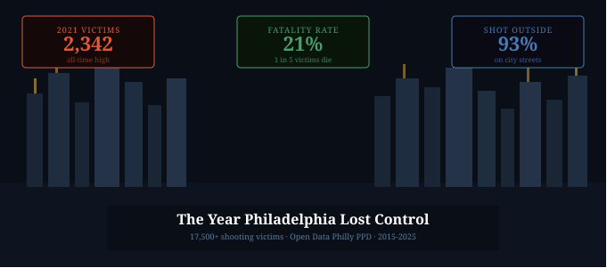
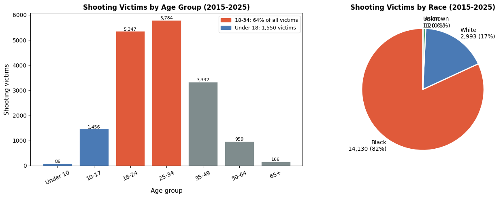
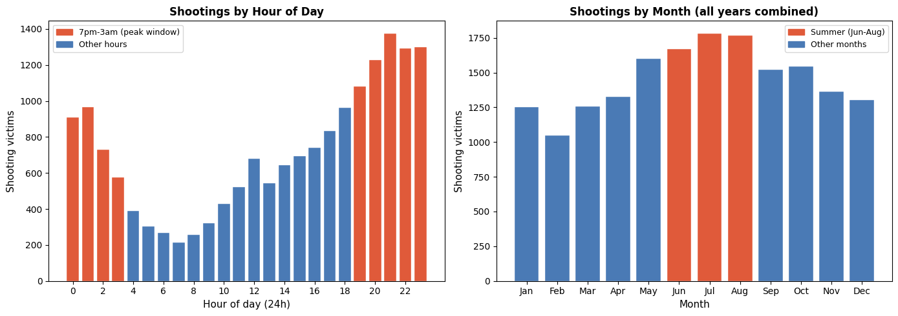
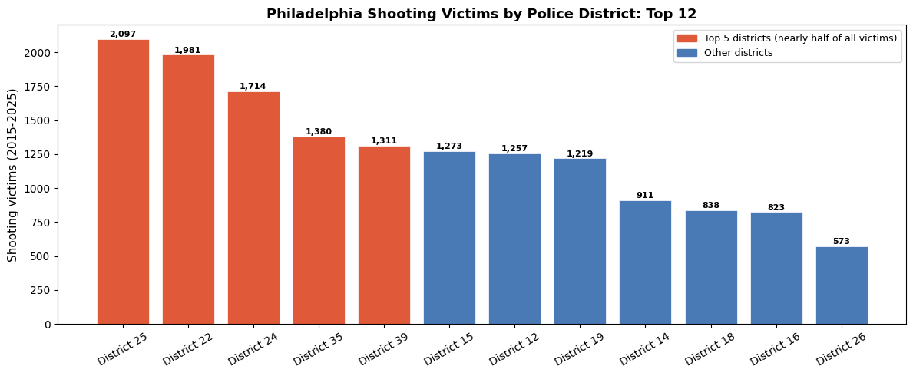

A data story using Philadelphia PPD shooting records from 2015 to 2025 to understand the city’s gun violence crisis — who it hits, when it happens, and what 2020 changed.
Author
Tarek Amro
Published
March 22, 2026

Philadelphia shootings
The Year Philadelphia Lost Control
From 2015 to 2019, Philadelphia averaged around 1,364 shooting victims per year. That number was already high enough to place the city among the most violent in the United States. Then 2020 happened.
In a single year, shootings jumped 66% above the pre-pandemic average. In 2021, the city recorded 2,342 shooting victims – the highest total in this dataset, and one of the highest in the city’s modern history. One in five of those people died.
The Philadelphia PPD shooting data covers over 17,500 victims from 2015 through early 2026. What it shows is not just a city with a gun violence problem. It is a city where something broke in 2020 and has not fully healed since.
import pandas as pdimport numpy as npimport matplotlib.pyplot as pltimport matplotlib.patches as mpatchesdf = pd.read_csv('shootings.csv')df['officer_inv'] = df['officer_involved'].str.strip().str.upper() =='Y'df['fatal_bool'] = df['fatal'] ==1df['date_parsed'] = pd.to_datetime(df['date_'], errors='coerce')df['hour'] = pd.to_numeric(df['time'].str[:2], errors='coerce')df['month'] = df['date_parsed'].dt.month# Exclude partial 2026 year from most chartsdf_full = df[df['year'] <=2025].copy()annual = df_full.groupby('year').agg( total=('objectid','count'), fatal=('fatal_bool','sum'), officer=('officer_inv','sum')).reset_index()annual['fatality_rate'] = annual['fatal'] / annual['total'] *100print(f'Total shooting victims (2015-2025): {len(df_full):,}')print(f'Total fatalities: {df_full["fatal_bool"].sum():,}')print(f'Overall fatality rate: {df_full["fatal_bool"].mean()*100:.1f}%')print(f'Peak year: 2021 with {annual.loc[annual["year"]==2021,"total"].values[0]} victims')
Total shooting victims (2015-2025): 17,429
Total fatalities: 3,609
Overall fatality rate: 20.7%
Peak year: 2021 with 2342 victims
2020: When the Numbers Broke
The surge in 2020 and 2021 stands alone. Between 2015 and 2019, shooting totals were roughly flat – fluctuating between 1,265 and 1,473 victims per year. Then in 2020, the count jumped to 2,259. In 2021, it reached 2,342.
The fatality rate – the share of shooting victims who died – stayed remarkably stable throughout, hovering around 20 to 21%. That consistency tells its own story: the lethality of gun violence in Philadelphia did not change. The volume did. More guns, more conflicts, more shootings across the board.
By 2023 and 2024, the numbers began to fall. But even in 2024, Philadelphia recorded 1,112 shooting victims – still below the 2020-2022 peak, but well above the pre-pandemic baseline.
The victim profile in this dataset is not evenly distributed across the city’s population. It is highly concentrated by age, sex, and race.
89% of shooting victims in Philadelphia are male. The median age is 27. More than 60% of victims are between 18 and 34 years old – young adults at the peak of their lives. Children under 18 account for nearly 1,500 victims over this period. People 65 and older represent just 167.
Black Philadelphians make up 81% of shooting victims in the dataset despite representing approximately 41% of the city’s population. This is not a city-wide problem distributed evenly. It is a crisis concentrated in specific communities, at specific ages, overwhelmingly hitting men.
bins = [0, 10, 18, 25, 35, 50, 65, 120]labels = ['Under 10', '10-17', '18-24', '25-34', '35-49', '50-64', '65+']df_full['age_group'] = pd.cut(df_full['age'], bins=bins, labels=labels, right=False)age_counts = df_full['age_group'].value_counts().reindex(labels)race_counts = df_full['race'].map({'B':'Black','W':'White','A':'Asian','U':'Unknown','O':'Other'}).value_counts()fig, axes = plt.subplots(1, 2, figsize=(14, 5))age_colors = ['#4a7ab5'if l in ['10-17','Under 10'] else'#e05a3a'if l in ['18-24','25-34'] else'#7f8c8d'for l in labels]axes[0].bar(labels, age_counts.values, color=age_colors, edgecolor='white', linewidth=0.5)axes[0].set_xlabel('Age group', fontsize=11)axes[0].set_ylabel('Shooting victims', fontsize=11)axes[0].set_title('Shooting Victims by Age Group (2015-2025)', fontsize=12, fontweight='bold')axes[0].tick_params(axis='x', rotation=25)for bar, val inzip(axes[0].patches, age_counts.values): axes[0].text(bar.get_x() + bar.get_width()/2, bar.get_height() +30,f'{val:,}', ha='center', fontsize=8)axes[0].legend(handles=[ mpatches.Patch(color='#e05a3a', label='18-34: 64% of all victims'), mpatches.Patch(color='#4a7ab5', label='Under 18: 1,550 victims'),], fontsize=9)race_plot = race_counts[race_counts.index.isin(['Black','White','Asian','Unknown'])]axes[1].pie(race_plot.values, labels=[f'{r}\n{v:,} ({v/race_plot.sum()*100:.0f}%)'for r, v inzip(race_plot.index, race_plot.values)], colors=['#e05a3a','#4a7ab5','#4a9e6b','#95a5a6'], startangle=90, textprops={'fontsize':10}, wedgeprops={'edgecolor':'white','linewidth':2})axes[1].set_title('Shooting Victims by Race (2015-2025)', fontsize=12, fontweight='bold')plt.tight_layout()plt.show()

When Shootings Happen: Night, Summer, Weekends
Gun violence in Philadelphia is not random in time. It follows clear patterns.
93% of shootings happen outdoors. The peak hour is 9pm, and the top five hours are all between 7pm and midnight. The safest hours by far are 4am to 6am – not because the city is safer, but because the streets are empty.
Seasonally, summer months dominate: July and August together account for roughly 22% of the annual total. January and February are the quietest months. This is consistent with what researchers call the “summer effect” – more people outside, more conflicts, more opportunities for violence.
Fridays, Saturdays, and Sundays account for 44% of shootings despite being only three of seven days.
hour_data = df_full.groupby('hour').agg( total=('objectid','count'), fatal=('fatal_bool','sum')).reset_index().dropna()hour_data = hour_data[hour_data['hour'].between(0, 23)]month_data = df_full.groupby('month').size().reset_index(name='total')month_names = ['Jan','Feb','Mar','Apr','May','Jun','Jul','Aug','Sep','Oct','Nov','Dec']fig, axes = plt.subplots(1, 2, figsize=(14, 5))night_mask = hour_data['hour'].isin(list(range(19, 24)) +list(range(0, 4)))h_colors = ['#e05a3a'if n else'#4a7ab5'for n in night_mask]axes[0].bar(hour_data['hour'], hour_data['total'], color=h_colors, edgecolor='white', linewidth=0.3)axes[0].set_xlabel('Hour of day (24h)', fontsize=11)axes[0].set_ylabel('Shooting victims', fontsize=11)axes[0].set_title('Shootings by Hour of Day', fontsize=12, fontweight='bold')axes[0].set_xticks(range(0, 24, 2))axes[0].legend(handles=[ mpatches.Patch(color='#e05a3a', label='7pm-3am (peak window)'), mpatches.Patch(color='#4a7ab5', label='Other hours'),], fontsize=9)summer_mask = [m in [6, 7, 8] for m in month_data['month']]m_colors = ['#e05a3a'if s else'#4a7ab5'for s in summer_mask]axes[1].bar(month_names, month_data['total'], color=m_colors, edgecolor='white', linewidth=0.3)axes[1].set_xlabel('Month', fontsize=11)axes[1].set_ylabel('Shooting victims', fontsize=11)axes[1].set_title('Shootings by Month (all years combined)', fontsize=12, fontweight='bold')axes[1].legend(handles=[ mpatches.Patch(color='#e05a3a', label='Summer (Jun-Aug)'), mpatches.Patch(color='#4a7ab5', label='Other months'),], fontsize=9)plt.tight_layout()plt.show()

The Districts: Where Violence Is Concentrated
Shootings are not spread evenly across Philadelphia’s 21 police districts. The top five districts – 25, 22, 24, 35, and 39 – account for nearly half of all shooting victims in this dataset.
District 25, which covers North Philadelphia, leads the city with 2,111 victims over this period. Districts 22 and 24, also in North and West Philadelphia, follow closely. These are neighborhoods with high poverty rates, limited economic opportunity, and persistent disinvestment – factors that correlate strongly with gun violence in research literature.
By contrast, the districts covering Center City, Northeast Philadelphia, and the affluent northwest of the city barely register on this chart.
dist_data = df_full.groupby('dist').agg( total=('objectid','count'), fatal=('fatal_bool','sum')).reset_index().dropna()dist_data['dist_label'] ='District '+ dist_data['dist'].astype(int).astype(str)dist_data = dist_data.sort_values('total', ascending=False).head(12)top5 =set(dist_data.head(5)['dist'])d_colors = ['#e05a3a'if d in top5 else'#4a7ab5'for d in dist_data['dist']]fig, ax = plt.subplots(figsize=(12, 5))bars = ax.bar(dist_data['dist_label'], dist_data['total'], color=d_colors, edgecolor='white', linewidth=0.5)for bar, val inzip(bars, dist_data['total']): ax.text(bar.get_x() + bar.get_width()/2, bar.get_height() +15,f'{val:,}', ha='center', fontsize=8, fontweight='bold')ax.set_ylabel('Shooting victims (2015-2025)', fontsize=11)ax.set_title('Philadelphia Shooting Victims by Police District: Top 12', fontsize=13, fontweight='bold')ax.tick_params(axis='x', rotation=30)ax.legend(handles=[ mpatches.Patch(color='#e05a3a', label='Top 5 districts (nearly half of all victims)'), mpatches.Patch(color='#4a7ab5', label='Other districts'),], fontsize=9)plt.tight_layout()plt.show()

Conclusion
The Philadelphia PPD shooting data tells a story that is both specific and deeply familiar to anyone who has followed the city’s public safety conversation.
Gun violence in Philadelphia is concentrated in a narrow demographic slice – young men, overwhelmingly Black, in a handful of North and West Philadelphia neighborhoods – and it surged in 2020 in a way that no single factor fully explains. Lockdowns disrupted social services, courts, and community programs. Police-community trust collapsed. Illegal gun availability increased. All of these likely contributed.
The numbers have come down from the 2021 peak. But the pre-pandemic baseline – already more than 1,300 victims a year – was not a good baseline. And the communities bearing the weight of this crisis are the same ones that have been bearing it for decades.
Data tells you where the problem is and how big it is. It does not tell you how to fix it. But it does make it harder to look away.